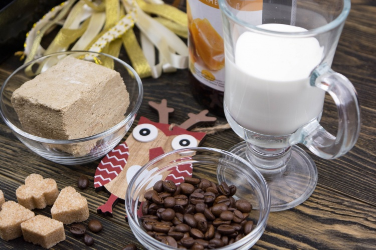
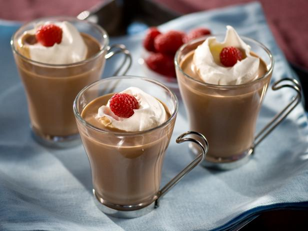
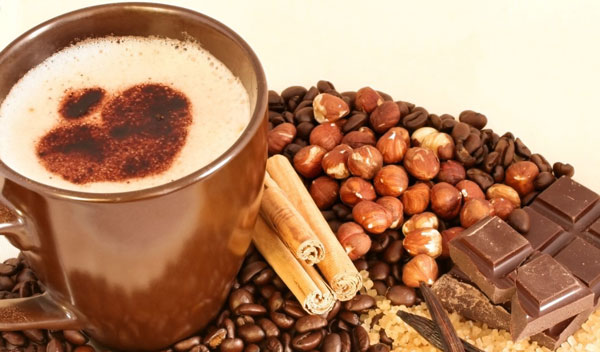
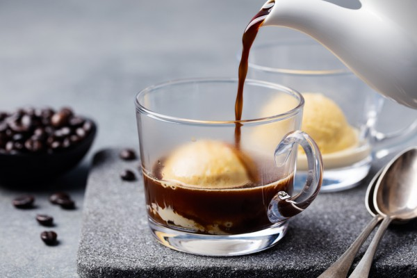

Кофе с халвой

Готовим десерт из кофе, халвы и молока. Необычное сочетание ингредиентов придает интересный вкус и аромат напитку.
Ингредиенты:
Холодный малиновый кофе

Освежающий и тонизирующий холодный коктейль порадует вас своим бодрящим эффектом и идеальным вкусом натурального кофе. Малина придаст напитку яркие ягодные нотки и сладость.
Ингредиенты:
Холодный черешневый кофе

Приятный вкус холодного кофе с черешней покажется вам просто сказкой в летний жаркий день. Беспощадный зной - это не повод отказываться от любимого напитка!
Ингредиенты:
Рецепт кофе гляссе

Для кофеманов, которые не могут представить ни дня без своего любимого напитка, не существует никаких препятствий. Даже в летний зной можно не отказываться от бодрящего ароматного кофе, сделав порцию вкуснейшего гляссе.